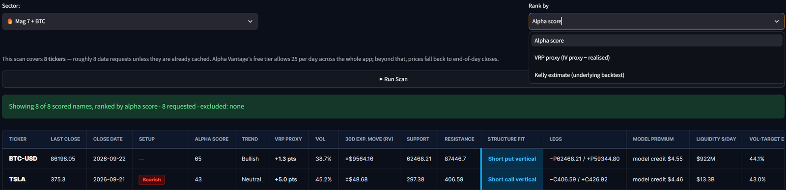
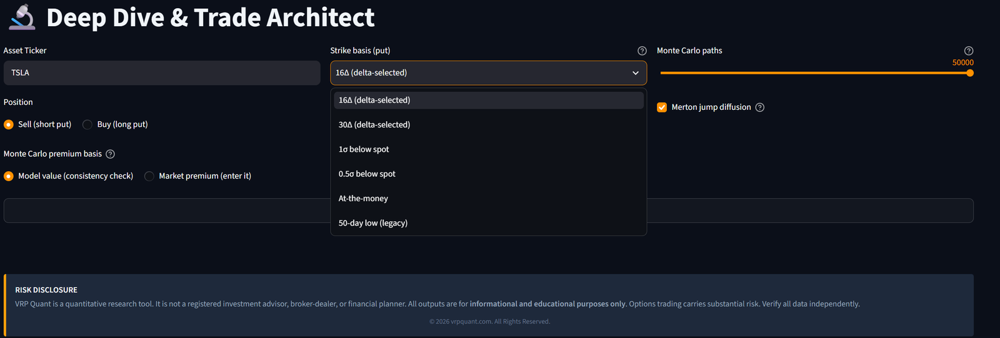
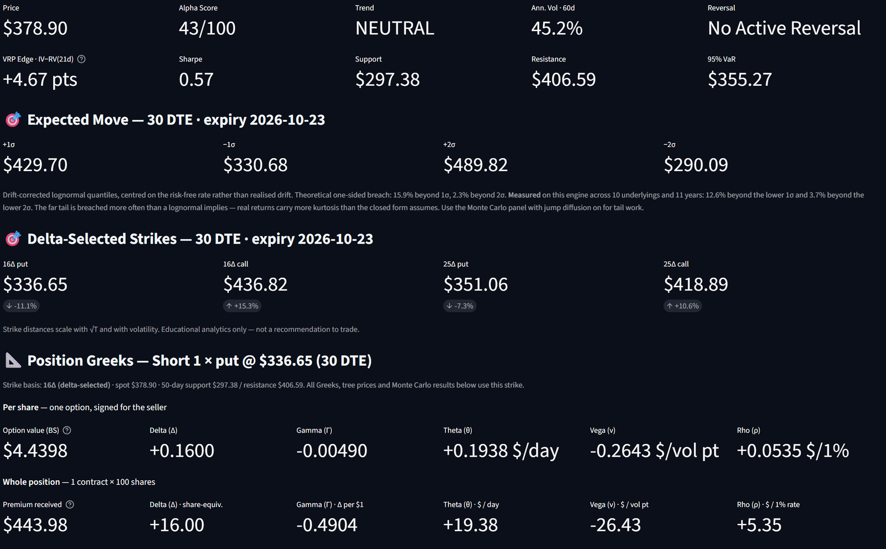
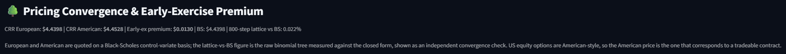
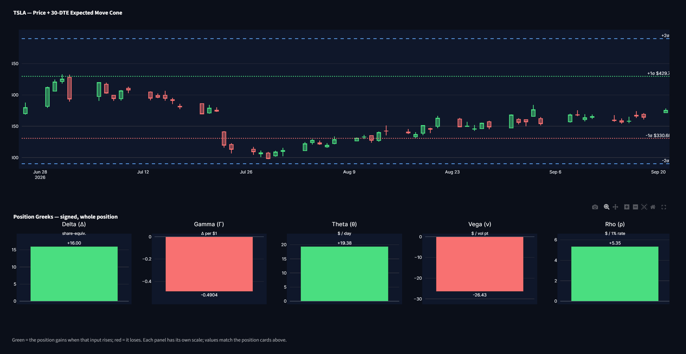
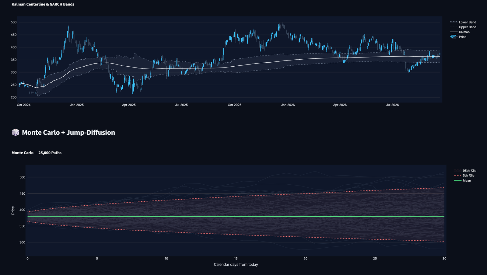
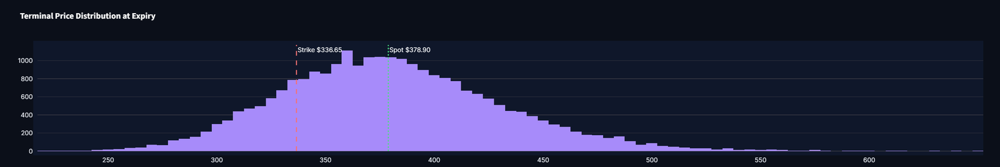

Verified math.
Not asserted.
Every build of the VRP Quant terminal runs a deterministic proof suite in public continuous integration. The report it produces is published on this site, stamped with the commit hash you can read in the terminal sidebar. If the mathematics breaks, the build goes red and it does not ship.
A variance risk premium research terminal that shows its working.
Two modules. The Scanner ranks a universe on volatility-regime and premium-richness criteria. Deep Dive takes one name and prices a position three ways from the same inputs, then shows you how far the three disagree.
What it does not do is hand you a trade and hide the derivation. Every strike is traceable to a stated basis, every volatility figure to a stated estimator, every price to a stated model, and every data point to the source that actually served it.
Every ticker runs the same pipeline. No shortcuts, no exceptions.
Six-source data waterfall
Alpha Vantage, Google Finance, Polygon, yfinance, FRED and NewsAPI, each with per-request health reporting. Source indicators reflect the outcome of the actual request, never merely that a key is configured. A throttled reply that arrives dressed as a success is caught and marked as a fallthrough. Every price carries the time it was valid and is labelled live, delayed, last close, stale or unknown against the market session — "live" only when the timestamp supports it — and every price history states its units and whether it is split- or dividend-adjusted.
Gap-aware volatility
Yang-Zhang realised volatility over a fixed window, so overnight gaps are measured instead of ignored. Close-to-close estimators treat a gap as though it never happened, which is exactly backwards for anyone short premium.
Three pricing methods, one set of inputs
Black-Scholes closed form, an 800-step Cox-Ross-Rubinstein lattice covering European and American exercise, and Monte Carlo across five to fifty thousand paths with optional Merton jump diffusion. The lattice reports its own error against the closed-form price on screen. All three share the same volatility, rate and strike, so their agreement checks the arithmetic, not the inputs — and with jumps switched on the simulation is a different model by design, so its numbers are not expected to match the closed form.
Implied volatility, solved not borrowed
At-the-money implied volatility is solved from the live chain's own bid and ask — the call side and the put side independently, at the expiry's actual days to expiry and the current Treasury rate — rather than read out of a data vendor's implied-volatility field. The two sides are compared at the same strike and expiry; listed options are American and many underlyings pay dividends, so some gap is normal, but a gap too large for early exercise and dividends to explain marks a stale or one-sided quote and the chain is rejected. A last trade is used only if it is recent, and then with its real uncertainty, never as a price known to the cent. Where the quoted market is too wide to identify a volatility at all, it says so rather than reporting a number. Every Greek, every tree price and every simulation below it inherits that figure — and that contract's expiry, and one stated dividend assumption — which is why their provenance is printed beside them.
Strike selection you control
Delta-selected strikes solve numerically for the strike carrying that delta. Sigma bands are drift-corrected lognormal quantiles. They are related and not equal, and the terminal keeps them as separate choices rather than quietly conflating them.
Live discount rate
Discounting uses the current three-month Treasury yield pulled from FRED and dated on screen, not a hardcoded constant left over from whenever the file was written.
Build traceability
The terminal's sidebar shows its version, the engine file's SHA-256 fingerprint and the commit it was deployed from; the verification report prints the same fingerprint and the exact package versions it ran against. Where they match, the software in front of you is the software that was proven. The terminal deploys only from a branch that advances after the verification suite and a smoke test of every screen pass.
Unedited captures from the running terminal.
These are screenshots of the deployed application, not illustrations of it — cropped to the working area, otherwise unedited. One TSLA session, one scan, the same day. The charts drawn on this page are generated from that session's inputs, so every number here agrees with the screenshots beside it.







Proof that runs in public on every commit.
No market data, no API keys, no network. Each check is a closed-form identity or a convergence property — true or false independently of any market view. The suite exits non-zero on failure, so a passing run cannot be a silent one.
| Property tested | Result |
|---|---|
| Put-call parity across dividend yields, price and delta | Holds |
| Dividend yield applied exactly once | Exact |
| CRR European convergence to Black-Scholes | 640/640 cases |
| American ≥ European, early exercise non-negative | 60/60 pairs |
| American price against a 4,000-step reference | 0.135% worst |
| One-sigma bands vs true lognormal quantile | Exact |
| One-sigma breach probability vs theory | 15.87 / 15.86 |
| Volatility estimator independent of input length | Stable |
| Greeks sign and range | Holds |
| Monte Carlo memory bounded at maximum paths | < 500 MB @ 50k |
| No look-ahead in the walk-forward backtest | Prefix-stable |
| GARCH forecasts unchanged when future data changes | Zero drift |
| Position Greeks signed by side and size | Holds |
| Feature limits enforced at execution | Holds |
| Monte Carlo agrees with the matching model price | Within 4 SE |
| One dividend input through every pricer | Holds |
| Quote freshness and volume units | Holds |
| Every screen runs end to end before deploy | Smoke test |
| Incomplete price bars removed before any model | Holds |
| POP computed from the seller's P&L, net of premium | Holds |
| Implied volatility round-trips to the pricing volatility | 1.9e-05 worst |
| Implied volatility solver declines what it cannot identify | Holds |
| Realised volatility matches the textbook Yang-Zhang estimator | Holds |
| Market-data adapter: IV solved, never copied; one price snapshot | Holds |
| No account or order endpoint reachable from the code | Holds |
These establish that the arithmetic is correct. They say nothing about whether any given trade is profitable, and are not offered as though they did.
Research and education purposes only.
VRP Quant is a quantitative research and education tool for studying the variance risk premium and how short-premium options structures are priced. There are no plans, prices or subscriptions on this site. Nothing the terminal produces is a recommendation to buy or sell any security, and nothing on this page describes a trading result.
Ask how it works.
Questions about methodology or data sources: VRP Quant's social channels — X (@VRPQuant), LinkedIn and Facebook (VRP Quant).
VRP Quant does not answer questions about whether to place a specific trade, on any channel. It is a research tool, not an advisor, and it is not registered to give individual investment advice.
Straight answers, including the ones that don't sell harder.
Does the verification report mean the signals make money?
No, and it is not offered as though it does. It proves the pricing mathematics is correct. Pricing an option right is a necessary condition for the tool to be worth anything and not a sufficient one. Anyone conflating the two is selling you something.
Is there a backtest with a return figure?
The terminal runs a walk-forward, out-of-sample backtest of its underlying band signal — it trades the stock, not an options position — and shows it inside the product with a hypothetical-performance disclaimer attached. Those numbers are not reproduced on this page, because a simulated result presented as marketing is a performance claim and this is a research tool, not a track record.
Where does the data come from?
Six sources in a defined waterfall. Free-tier limits are real and the terminal tells you when it hits one rather than silently substituting stale data. The sidebar reports which source served each request, and every price on the analysis page says how fresh it is.
Can I verify the report myself?
Yes. It is generated by the test suite in the repository and run by GitHub Actions against the commit named in its header. The report names the engine version it certifies, and the terminal shows its version in the sidebar. Where the two agree, the software you are using is the software that was proven.
Does it place trades?
No. There is no order routing and no execution of any kind — the code cannot reach an account or order endpoint, and the verification suite checks that on every build. It is a research terminal. You take your own decisions to your own broker.